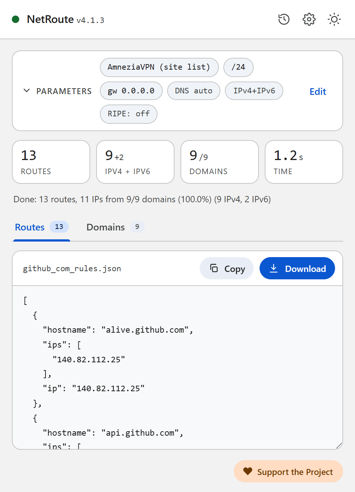
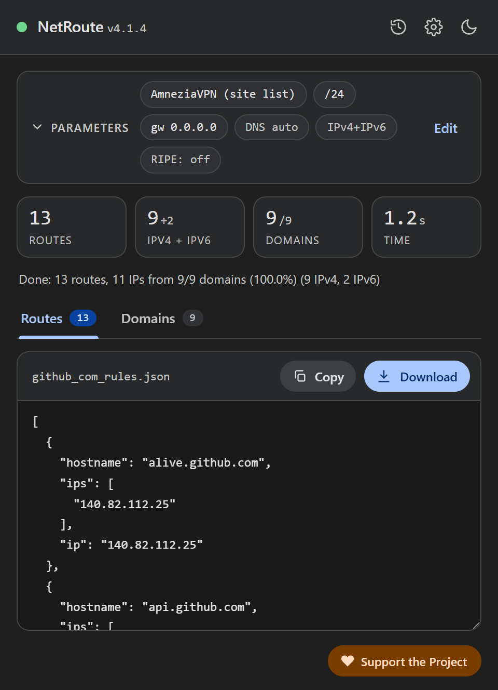

AmneziaVPN site list from any website
AmneziaVPN can send only the addresses from a list through the VPN — split tunneling for sites. The list consists of IPv4 addresses and subnets, and building it by hand for a site with dozens of domains takes long. NetRoute does it from the page: open the site, click “Analyze website”, download the file for import.
What is inside the file
The file is a JSON array of entries in the shape AmneziaVPN itself exports its list: each entry has a hostname, the list of addresses ips and the first of them in ip — for older versions of the app.
[
{ "hostname": "api.github.com", "ips": ["140.82.112.4"], "ip": "140.82.112.4" },
{ "hostname": "github.com", "ips": ["140.82.112.3"], "ip": "140.82.112.3" },
{ "hostname": "140.82.112.0/20", "ips": [], "ip": "" },
{ "hostname": "185.199.108.0/22", "ips": [], "ip": "" }
]- Hosts with addresses. Per the client’s source code AmneziaVPN does not resolve names on import — the entries are stored as given, and resolving happens only when a site is added by hand. So NetRoute writes every host with the IPv4 addresses found during the scan; hosts without IPv4 addresses are left out. Names are not folded:
www.ozon.ruandozon.ruare separate entries with their own addresses. - Subnets. After the hosts come the aggregated IPv4 networks — the same ones NetRoute emits as router routes; with Route Optimization → BGP Prefix these are the provider’s announced prefixes rather than single addresses.
- IPv4 only. Per the AmneziaVPN documentation IPv6 is not supported; IPv6 addresses are not written to the file.


What you need
- The AmneziaVPN app with a configured connection. Per the documentation split tunneling by addresses is not available in Amnezia Free
- A platform with tunneling by addresses: per the documentation iOS, macOS and Linux support only that, Windows and Android both by addresses and by apps
- The NetRoute extension in Chrome
Step 1. Generate the list in NetRoute
- Open the website in Chrome and reload the page so the extension’s sniffer sees the background requests
- Start NetRoute
- Under Target OS pick AmneziaVPN (site list) — the “VPN clients” group
- The Gateway IP and Device fields do not affect this format
- Click Analyze website
- On the Domains tab untick what you do not need — counters, ad networks, third-party CDNs; the list updates at once
- Click Download: the file is named after the site, for example
github_com_rules.json
Step 2. Import the file into AmneziaVPN
Per the AmneziaVPN documentation the list is imported from the split tunneling settings for sites:
- Open Split tunneling and go to the split tunneling settings for sites
- Tap the ⋮ icon and choose the import: replace the list — when starting from scratch, or add the imported sites to the existing ones — when extending
- Pick the downloaded file; the entries appear in the list
Step 3. Turn on the mode and connect
- Choose the mode Only the sites listed here will be accessed through the VPN — only the sites from the file go through the tunnel, the rest of the traffic goes direct. The second mode, Addresses from the list should not be accessed via VPN, does the opposite: it excludes the list from the tunnel
- Enable split tunneling for sites
- Connect to the VPN
Step 4. Check
Open the site the list was built for: it should open through the VPN, sites outside the list direct. If the site opens only partly — some of its domains are missing from the list: check the Domains tab in NetRoute, walk through the site before scanning (sign in, open a video) so the sniffer sees the deferred requests, and import the file again, replacing the list.
Common problems
The file does not import
Per the client’s source code the file must be a JSON array of objects; a plain array of strings is rejected. The NetRoute file already has the right shape — check that it was downloaded completely and not edited in a text editor that replaces quotes.
The site worked, then stopped
The site’s addresses changed. Rebuild the file in NetRoute — with BGP Prefix enabled it carries subnets instead of single addresses — and import it replacing the list.
Unrelated traffic went through the VPN
The AmneziaVPN documentation warns that the wide subnets of large services can capture unrelated traffic. Untick third-party CDNs on the Domains tab in NetRoute or turn the BGP optimization off for such sites.
The connection to your own server was lost
Per the documentation, when the address of your VPN server falls inside one of the added subnets the connection breaks — remove that subnet from the list.
Several sites in one list
Click URL list next to the analyze button and paste the list of sites — NetRoute builds one file for all of them, named bulk_N_rules.json.
DNS and leaks
AmneziaVPN’s split tunneling works by addresses: traffic to the addresses from the list enters the tunnel, while the browser’s DNS queries go wherever its resolver is configured. When that is the ISP’s resolver, it sees the names of the sites even while the traffic itself goes through the VPN. In Chrome turn off “Use secure DNS” or point it at a resolver you trust; the DNS settings of AmneziaVPN itself are described in its documentation.
Check: dnsleaktest.com with the VPN connected shows whose resolver answers your queries.
Example Configuration File
Ready-to-edit template. Replace the example domains and networks with output from NetRoute for your target sites.
amnezia-sites.json— a list for import into AmneziaVPN: hosts with addresses and subnets
[
{
"hostname": "api.github.com",
"ips": [
"140.82.112.4"
],
"ip": "140.82.112.4"
},
{
"hostname": "avatars.githubusercontent.com",
"ips": [
"185.199.108.133"
],
"ip": "185.199.108.133"
},
{
"hostname": "github.com",
"ips": [
"140.82.112.3"
],
"ip": "140.82.112.3"
},
{
"hostname": "github.githubassets.com",
"ips": [
"185.199.108.154"
],
"ip": "185.199.108.154"
},
{
"hostname": "140.82.112.0/20",
"ips": [],
"ip": ""
},
{
"hostname": "185.199.108.0/22",
"ips": [],
"ip": ""
}
]
Hint: the text formats download with a comment header. Untick “Include comments in exported files” in the NetRoute options to get the rules alone; the JSON formats never carry comments.
All example configs on GitHub →
Official Documentation
- AmneziaVPN: split tunneling — modes, import, limits
- AmneziaVPN: client source code — the import format in ipSplitTunnelingController
- Amnezia: what split tunneling is
Related Guides
- Keenetic — routes from a
.batupload - MikroTik —
.rscscript import into RouterOS - WireGuard — split tunneling via
AllowedIPs - Linux —
ip routeshell script - OpenVPN —
routedirectives in the client config - sing-box / Hiddify — rule-set for sing-box and Hiddify
- Xray / 3X-UI / v2rayN — routing.rules for Xray-core, 3X-UI and v2rayN
- Happ — routing profile as a happ://routing link
Ready to try?
NetRoute — a free Chrome extension to generate routes from any website.
Install Extension